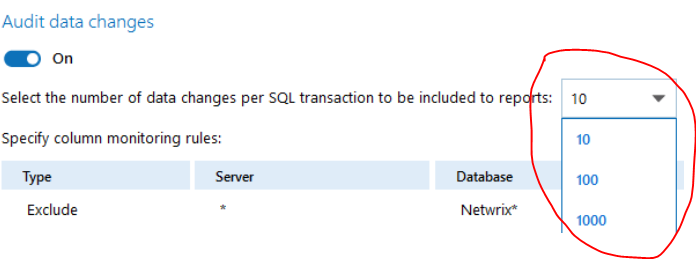
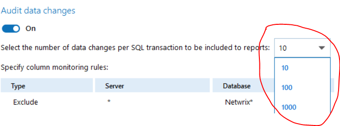

When performing bulk inserts not all modified rows are reported. How to change this?
In the SQL Server data source settings there is a value that defines the number of data changes per SQL transaction to be included in a report. By default it is set to 10.

In the SQL Server data source settings there is a value that defines the number of data changes per SQL transaction to be included in a report. By default it is set to 10.
